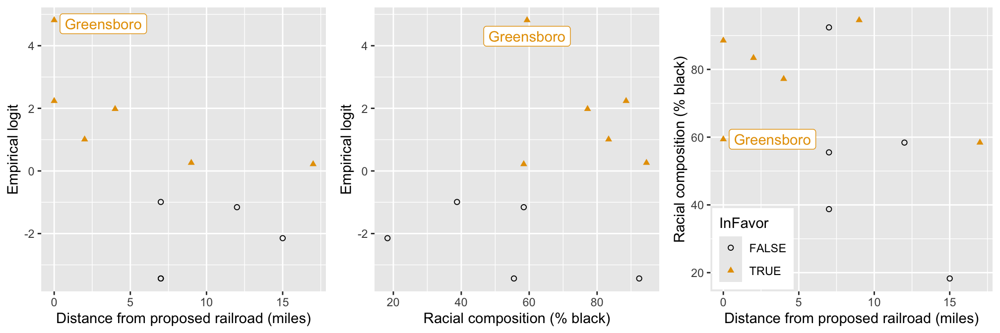

| community | pctBlack | distance | YesVotes | NumVotes | propYes | InFavor |
|---|---|---|---|---|---|---|
| Carthage | 58.40 | 17 | 61 | 110 | 0.555 | TRUE |
| Cederville | 92.40 | 7 | 0 | 15 | 0.000 | FALSE |
| Five Mile Creek | 18.28 | 15 | 4 | 42 | 0.095 | FALSE |
| Greensboro | 59.38 | 0 | 1790 | 1804 | 0.992 | TRUE |
Quasibinomial Logistic Regression
Logistic regression – Stat 230
Support for railroad referenda in 1870s Alabama
Research question:
Was voting on railroad referenda during the Reconstruction Era related to distance from the proposed railroad line and the racial composition of a community?
Hypotheses:
Positive votes were inversely proportional to the distance a voter is from the proposed railroad
racial composition of a community is hypothesized to be associated with voting behavior
Data source: Broadening Your Statistical Horizons, Legler & Roback
Data
Michael Fitzgerald obtained data from the 1870 U.S. Census from communities in Hale County, Alabama
YesVotes= the number of “Yes” votes in favor of the proposed railroad line (primary response variable)NumVotes= total number of votes cast in the electionpctBlack= racial composition (% black)distance= the distance from the proposed railroad (in miles)
EDA
Was voting on railroad referenda during the Reconstruction Era related to distance from the proposed railroad line and the racial composition of a community?
Is there evidence of lack of fit?
glm(formula = YesVotes/NumVotes ~ distance * pctBlack,
family = binomial, data = rrdata, weights = NumVotes)
Coefficients:
Estimate Std. Error z value Pr(>|z|)
(Intercept) 7.5509017 0.6383697 11.828 < 2e-16
distance -0.6140052 0.0573808 -10.701 < 2e-16
pctBlack -0.0647308 0.0091723 -7.057 1.70e-12
distance:pctBlack 0.0053665 0.0008984 5.974 2.32e-09
(Dispersion parameter for binomial family taken to be 1)
Null deviance: 988.45 on 10 degrees of freedom
Residual deviance: 274.23 on 7 degrees of freedom
AIC: 320.53Possible causes of lack of fit
Outliers
Deviance in logistic regression is analogous to SSE in linear regression
Outliers can inflate the deviance
Detection
- Deviance residual plots
Why do we care?
- Influential outliers result in biased estimates of the \(\widehat{\beta}_i\)s
Possible causes of lack of fit
Incorrect logit (mean) function
We fit a line to a curve
We omitted important predictor variables
Detection
Empirical logit plots
Deviance residual plots
GOF test
Why do we care?
- Biased estimates of the \(\widehat{\beta}_i\)s
Possible causes of lack of fit
Binomial model for \(Y\) is wrong
Trials are not independent
Probability of success is not the same across trials
Important predictors might be omitted
Detection
Think
GOF test
Deviance residuals
Why do we care?
Variance is greater than \(n_i \pi (X_i) (1 - \pi (X_i))\)
SEs are likely too small \(\Longrightarrow\) p-values too small and CIs too narrow
Exploring lack of fit

Since we have lack of fit, don’t treat residuals as normal
Greensboro not really an outlier
Possible nonlinearity
Quadratic model
\[\begin{aligned}
{\rm logit}(\pi) = \beta_0 + \beta_1 {\tt distance} + \beta_2 {\tt pctBlack} + \beta_3 {\tt distance^2}\\ + \beta_4 {\tt distance \times pctBlack}
\end{aligned}\]
Estimate Std. Error z value Pr(>|z|)
(Intercept) 8.365538 0.919710 9.096 < 2e-16 ***
distance -1.592867 0.131070 -12.153 < 2e-16 ***
pctBlack -0.062498 0.012845 -4.866 1.14e-06 ***
I(distance^2) 0.044576 0.003388 13.156 < 2e-16 ***
distance:pctBlack 0.009830 0.001514 6.493 8.43e-11 ***
Null deviance: 988.450 on 10 degrees of freedom
Residual deviance: 72.018 on 6 degrees of freedomIs there still evidence of lack of fit?
Exploring lack of fit

Do you see anything concerning here?
Overdispersion
(extra-binomial variation)
Model assumptions
We assume that \(Y_i\) is binomial
\[Y | X_i \sim {\rm Binomial}(n_i, \pi_i)\]
This implies that within the same subpopulation
(combo of \(x_i\)s)
trials are independent
trials have the same probability of success
\({\rm E}(Y|X_i) = n_i \pi_i\)
\({\rm Var}(Y|X_i) = n_i \pi_i(1- \pi_i)\)
Overdispersion
If the binomial assumptions are not met, then the variance of the \(Y_i\) will usually be larger than what is expected for a binomial distribution:
\[{\rm Var}(Y|X_i) > n_i \pi_i (1 - \pi_i)\]
Overdispersion
Let \(Z_1, \ldots, Z_m\) be iid Bernoulli (S/F) trials with probability of success \(\pi\).
\[\begin{aligned}
Y &= Z_1 + \ldots + Z_m\\
{\rm Var} (Y) &= {\rm Var}(Z_1 + \ldots + Z_m)\\
&= {\rm Var}(Z_1) + \ldots + {\rm Var}(Z_m) + 2 \sum_{i<j} {\rm Cov}(Z_i, Z_j)\\
&= \psi m \pi (1 - \pi)
\end{aligned}\]
So what?
p-values too small
CIs too narrow
Ad hoc test of overdispersion
Recall:
\(D^2 = 2 \sum \left[ Y_i \log \left( \dfrac{Y_i}{n_i\widehat{\pi}_i} \right) + (n_i - Y_i) \log \left( \dfrac{n_i - Y_i}{n_i - n_i \widehat{\pi}_i} \right) \right]\)
If the model is correct and all ni are large enough, \(D^2 \overset{\cdot}{\sim} \chi^2\) with \(\text{df}= n-(p+1)\)
\(E\left( D^2 \right) = {\rm df} \Longrightarrow \dfrac{D^2}{{\rm df}} \approx 1\)
Red flag if \(D^2/{\rm df} >\!\!> 1\)
Model checking
If over-dispersion exists, check whether the assumptions are met
Do we have independence?
If assumptions met, then check for outliers.
If assumptions met, do we need to include an interaction term, some other term(s)?
If assumptions met, then maybe an incorrect model (binomial model not appropriate)?
Quasi-likelihood approach
Estimate \(\beta_i\)s using ML estimation, as before
Estimate \(\psi\) using \(\widehat{\psi} = \dfrac{\text{deviance}}{{\rm df}}\)
Use \({\rm SE_{quasibinomial}}(\widehat{\beta}_i) = \sqrt{\widehat{\psi}} \cdot {\rm SE_{binomial}}(\widehat{\beta}_i)\) and use the \(t\)-distribution with \(n-(p+1)\) degrees of freedom
You can do a “drop-in-deviance” test using an F test:
\[{\rm F} = \dfrac{\left[ \text{deviance(reduced)} - \text{deviance(full)} \right] / d}{\widehat{\psi}}\]
where \({\rm F} \sim F_{d,\, n-(p+1)}\)
Ad-hoc adjustment
Coefficients:
Estimate Std. Error z value Pr(>|z|)
(Intercept) 8.365538 0.919710 9.096 < 2e-16 ***
distance -1.592867 0.131070 -12.153 < 2e-16 ***
pctBlack -0.062498 0.012845 -4.866 1.14e-06 ***
I(distance^2) 0.044576 0.003388 13.156 < 2e-16 ***
distance:pctBlack 0.009830 0.001514 6.493 8.43e-11 ***
(Dispersion parameter for binomial family taken to be 1)
Null deviance: 988.45 on 10 degrees of freedom
Residual deviance: 72.018 on 6 degrees of freedomLet’s correct the test for whether \(\beta_{\rm distance} = 0\)
Quasi-likelihood in R (“proactive” approach)
Coefficients:
Estimate Std. Error t value Pr(>|t|)
(Intercept) 8.365538 3.038714 2.753 0.03316 *
distance -1.592867 0.433054 -3.678 0.01035 *
pctBlack -0.062498 0.042440 -1.473 0.19127
I(distance^2) 0.044576 0.011195 3.982 0.00727 **
distance:pctBlack 0.009830 0.005003 1.965 0.09701 .
(Dispersion parameter for quasibinomial family taken to be 10.91635)
Null deviance: 988.450 on 10 degrees of freedom
Residual deviance: 72.018 on 6 degrees of freedomComparing models in R
You have to tell R to use an F-test to conduct the quasi-binomial drop-in-deviance test
Analysis of Deviance Table
Model 1: YesVotes/NumVotes ~ distance + pctBlack + I(distance^2)
Model 2: YesVotes/NumVotes ~ distance * pctBlack + I(distance^2)
Resid. Df Resid. Dev Df Deviance F Pr(>F)
1 7 118.302
2 6 72.018 1 46.284 4.2399 0.08516 .
---
Signif. codes: 0 '***' 0.001 '**' 0.01 '*' 0.05 '.' 0.1 ' ' 1